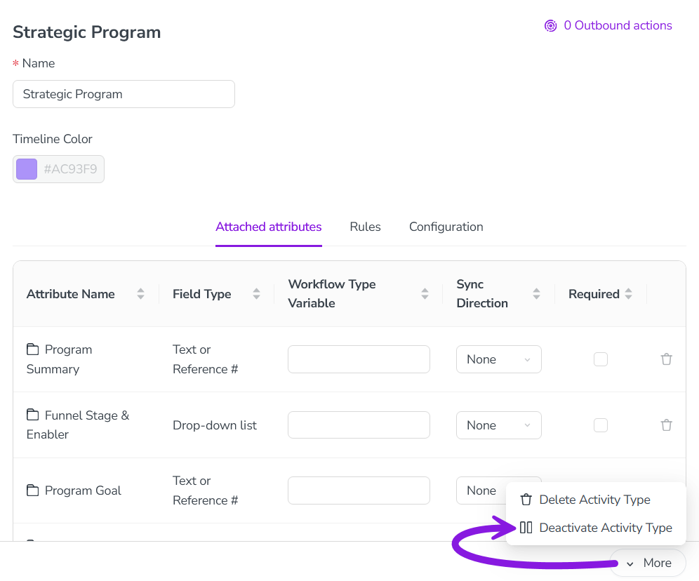

Deactivate or delete activity types
If you no longer need an activity type, you have two options: you can either deactivate or delete the unneeded activity type. Here's what each option does, and when you should use each one:
Deactivate an activity type: When you deactivate an activity type, you can no longer create activities of that type. However, all previously created activities of the type remain. Use this option in most cases when you no longer need an activity type, as it retains data for reporting purposes.
Delete an activity type group: Deleting an activity type will permanently remove it from your Uptempo instance. You can only delete an activity type if there are no more activities of the type, or any rules that involve the type. This means that, to delete an activity type, you must first delete all activities within it, and all rules related to the group. As a result, use this option only when you no longer need any of the data associated with these activities. Otherwise, deactivate the activity type instead.
Deactivate an activity type
In the
 Activities section, click
Activities section, click  Settings:
Settings: 
In the Activity Configuration menu, click Activities > Types & Groups.
In the list panel on the left, click on the activity type you want to deactivate. The selected activity type's settings are shown in the settings panel on the right.
In the settings panel, click More > Deactivate Activity Type:

The change is saved automatically, and takes effect immediately.
The activity type is deactivated, and is displayed in the list panel with "(Inactive)" after its name.
To re-enable a deactivated activity type, follow the same steps, then select More > Activate Activity Group in step 4.
Delete an activity type
In the
Activities section, click Settings.In the Activity Configuration menu, click Activities > Types & Groups.
In the list panel on the left, click on the activity type you want to delete. The selected activity type's settings are shown in the settings panel on the right.
In the settings panel, click More > Delete Activity Type.
The change is saved automatically, and takes effect immediately.
The activity type is deleted, and is removed from the list panel.